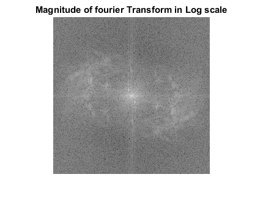
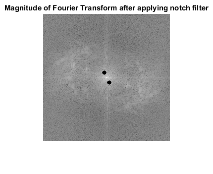
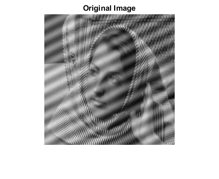

MyMainScript
Positions of interfereces (x=124,y=119), (x=134,y=139) Threshold used is 4.
Contents
code
tic; I = load('../data/image_low_frequency_noise.mat'); I = I.Z; F = fft2(I); S = fftshift(F); L = log(S); Mag = abs(L); Phase = angle(L); figure; imshow(Mag,[]); title('Magnitude of fourier Transform in Log scale'); saveas(gcf,strcat('../images/','Magnitude of fourier Transform','.png')) ; % After analysing the magnitude plot, we figured out the other spikes are % at (x=124,y=119) and (x=134,y=139); threshold = 4; [x,y] = meshgrid(1:256); Mask1 = (x-124).^2 + (y-119).^2 > threshold^2; [x,y] = meshgrid(1:256); Mask2 = (x-134).^2 + (y-139).^2 > threshold^2; Mag = Mask1.*Mag; Mag = Mask2.*Mag; RecoveredLog = Mag.*exp(Phase*sqrt(-1)); RecoveredFourier = exp(RecoveredLog); RecoveredShift = ifftshift(RecoveredFourier); RecoveredImage = ifft2(RecoveredShift); figure; imshow(Mag,[]); title('Magnitude of Fourier Transform after applying notch filter'); saveas(gcf,strcat('../images/','Magnitude of Fourier Transform after applying notch filter','.png')) ; figure; imshow(I,[]); title('Original Image'); saveas(gcf,strcat('../images/','Original Image','.png')) ; figure; imshow(RecoveredImage,[]); title('Recovered Image'); saveas(gcf,strcat('../images/','Recovered Image','.png')) ; toc;
Warning: Displaying real part of complex input. Elapsed time is 3.992506 seconds.  